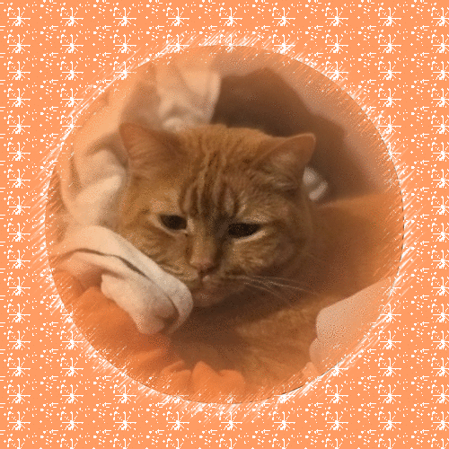

my cats


| Full Name | Ibid Festivus Humphrey |
|---|---|
| Age | 8 years |
| Born | 09/30/2014 |
| Weight | 15 lbs |
| Temperament | Nicest Cat Ever |
Ibby is a sweet and very large orange boy. His favorite people are anyone who is allergic to cats. He loves everyone and will always try and sit with you if you’re nearby. He is very sniffly and stuffed up often because he has kitty asthma. His full name “Ibid” is an english citing term used when citing the same source repeatedly on the same page. My mom is an english teacher and she thought that would be funny because we already had two cats when we got him. His middle name is Festivus because that’s what my dad wanted to name him.